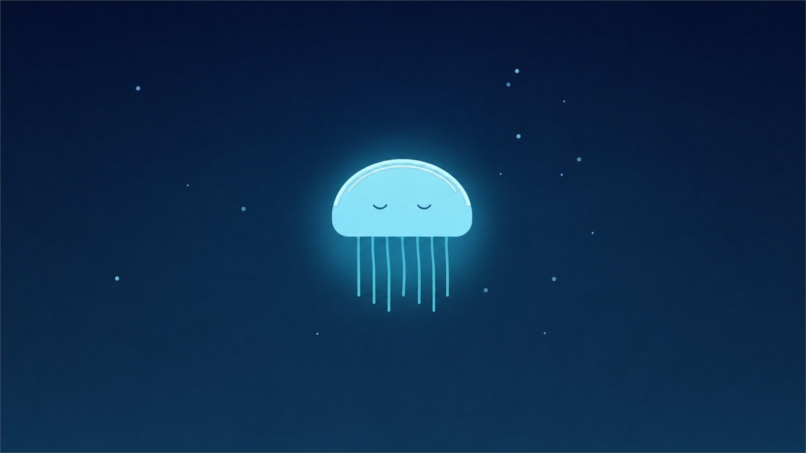
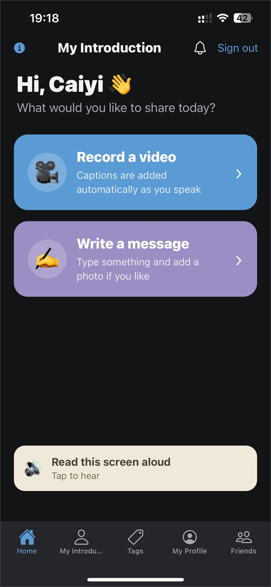
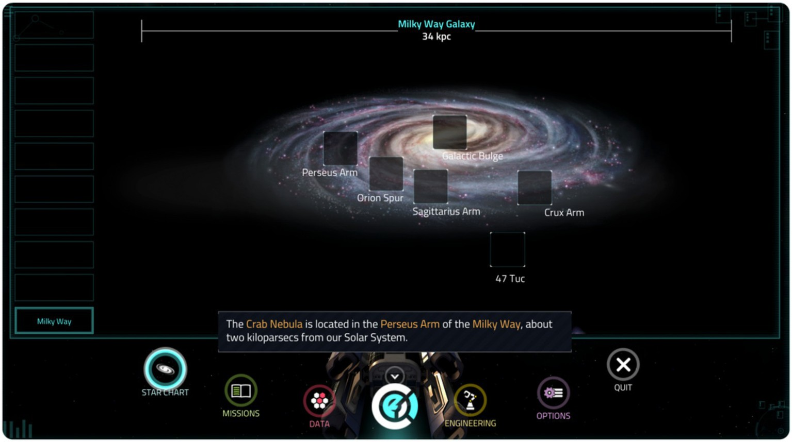

Tab 02
Research
Selected Research
-
01

Neural Entrainment Child-Friendly EEG Adaptation
Research questionCan an adult neural-entrainment paradigm be made calm enough for children to sit through without changing the timing the experiment measures?
- EEG
- Statistical Learning
- PsychoPy
- Experimental Design
- Visual Stimuli
-
02

Mind-Match-Cloud Autism-Focused Communication Support Prototype
Research questionCan a structured, repeatable tool lower the preparation cost of recording a self-introduction, and what do autistic participants say actually helps?
- Autism
- HCI
- User Testing
- Research Software
-
03

At Play in the Cosmos — Interactive Star Chart. Herder & Rau (2022), Frontiers in Education, CC BY. 3D Astronomy Game-Based Learning Study
Research questionWhere do learners get lost, spatially and conceptually, while learning astronomy inside a 3D game?
- Game-Based Learning
- STEM Education
- Observation
- UX Research